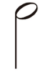
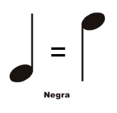
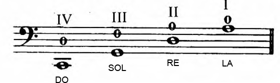

Cuando comenzamos a estudiar un instrumento como el violoncello, cuyo uso principal se encuentra en la Música Clásica, debemos comenzar a aprender a leer el sistema de notación musical tradicional. Es un sistema complejo que uno va descubriendo por necesidad y también por curiosidad.
Vamos a ir presentando los distintos elementos que forman parte de la escritura musical y que nos van a servir para poder comenzar a tocar el violoncello.
Seguramente en la primer clase de cello toques cada una de las cuerdas al aire, es decir sin usar los dedos de la mano izquierda y, por lo tanto, dejando que la cuerda vibre es su total longitud. A cada uno de esos sonidos podemos tocarlos dándoles una duración cualquiera, la que se nos ocurra, pero también podemos darle una duración específica para que se ajuste a ciertos parámetros que hablaremos a continuación.
Cuando escuchamos música que nos gusta, instintivamente podemos comenzar a mover la mano o el pie o la cabeza, y sin querer, si esos movimientos se producen a intervalos de tiempo regulares y constantes estaremos descubriendo el pulso de la música, de la misma forma que podemos sentir los latidos de nuestro corazón o nuestro propio pulso.
En principio trabajaremos con las 3 primeras figuras musicales de la imagen anterior.
Las redondas, que tienen una duración de 4 pulsos o tiempos:
Las blancas que duran 2 pulsos o tiempos:
También se puede dibujar con la plica hacia abajo:
Y las negras que duran 1 pulso o tiempo

Es un sistema de 5 lineas horizontales cuyas líneas se cuentan de abajo hacia arriba, en él se van a
colocar las notas, figuras, silencios y demás simbolos musicales.
Entre esas líneas se numeran de abajo hacia arriba los espacios.
Las notas muy agudas que no entran en el rango del pentagrama se dibujan con la ayuda de líneas adicionales por encima del pentagrama y las muy graves lo hacen con líneas adicionales por debajo.
Antiguamente, cuando no existía el pentagrama, se dibujaba una sola línea y a esa linea se le ponía el nombre de una nota con la letra inicial. Con el paso del tiempo y la evolución de la escritura musical esas letras se fueron deformando y originaron las modernas claves.
En este caso la clave de Fa viene de la letra F, los dos puntitos son las dos líneas horizontales de la F que se fueron acortando con el paso del tiempo.
La línea (La 4ta del pentagrama) que queda entre esos dos puntitos va a determinar que la nota que allí se dibuje se va a llamar FA.
El violoncello tiene 4 cuerdas que tocadas sin pisar con los dedos de la mano izquierda emiten los siguientes sonidos:

En números romanos (en este libro) se indican las cuerdas
En números arábigos se indican los dedos de la mano izquierda, como acá no se usan se coloca el 0.
Importante: memorizar estas primeras 4 notas, después se suman más y se torna más difícil leerlas.